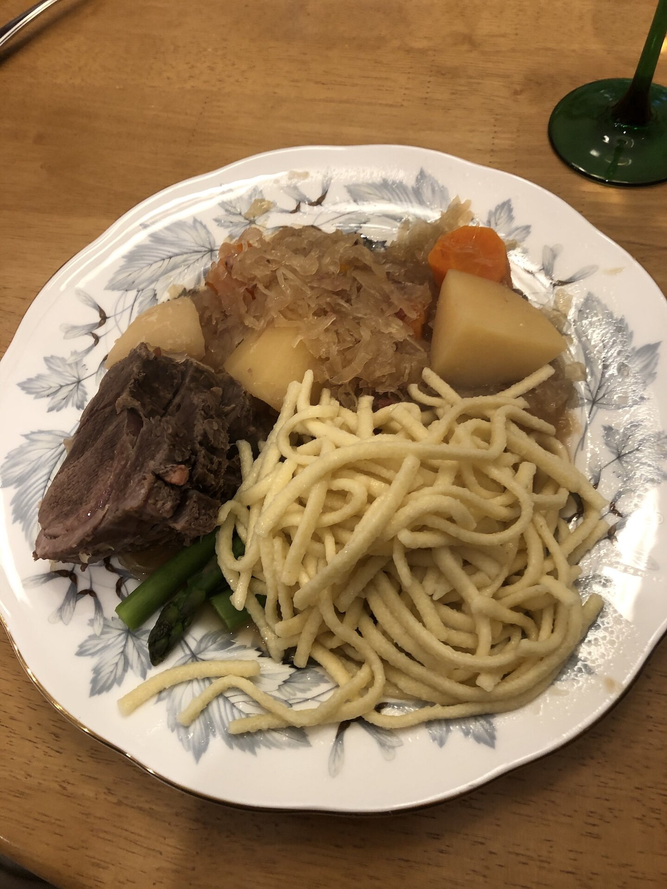

Braised Wild Boar with Sauerkraut

A wild boar roast is braised in a Dutch oven with vegetables until extremely moist and tender.
Ingredients
- 2 (20 ounce) cans sauerkraut, drained
- 3 pounds wild boar roast
- 1 large onion, quartered
- 4 potatoes, peeled and cubed
- 4 carrots, cut into 2 inch pieces
- 1 (12 fluid ounce) can or bottle beer
Directions
- Preheat the oven to 300 degrees F (150 degrees C).
- Pour one can of sauerkraut into the bottom of a Dutch oven. Set the roast on top of it, then arrange the onions potatoes and carrots around the roast. Cover with the remaining can of sauerkraut and pour in the beer. Cover with a lid.
- Bake in the preheated oven until the roast is extremely tender, about 3 hours.
Back Home